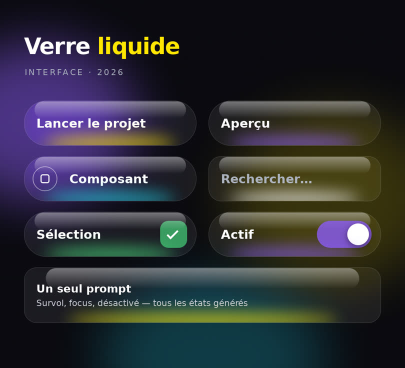
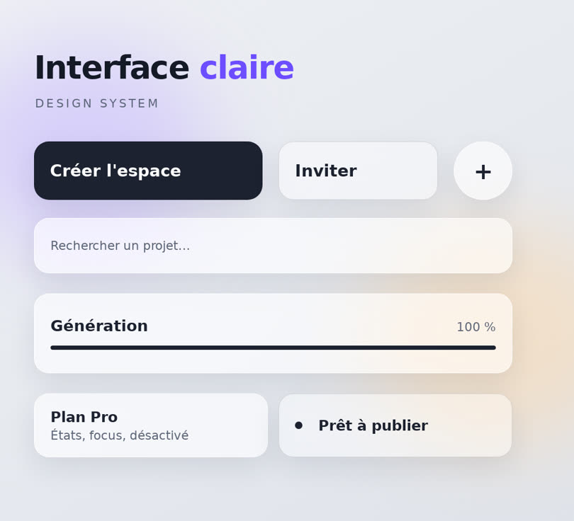
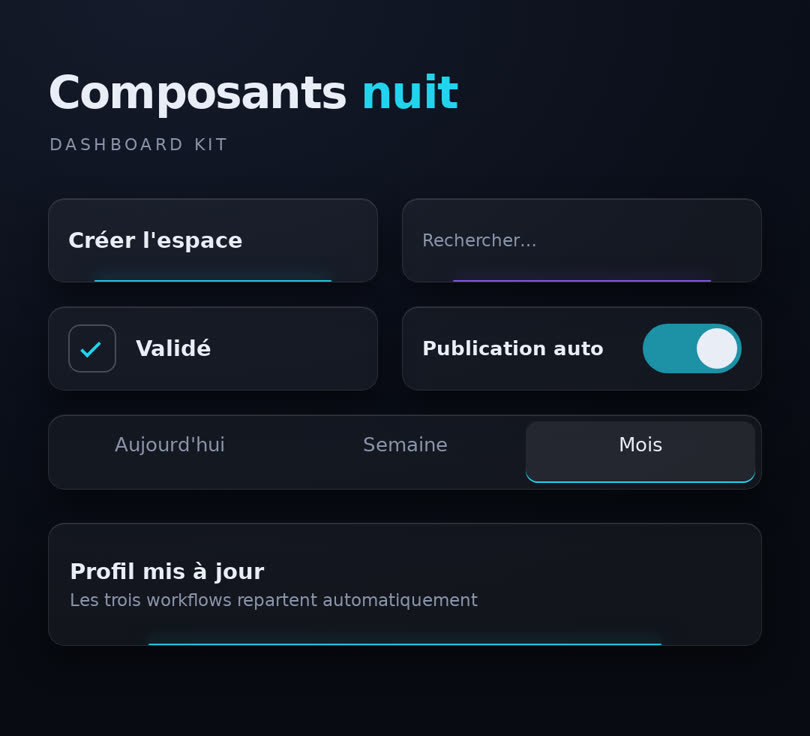
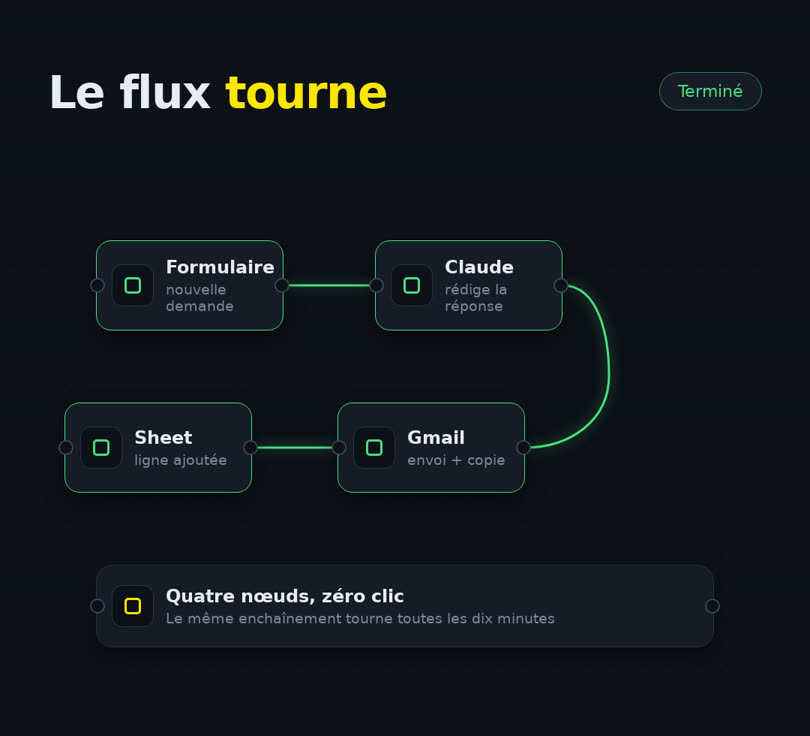
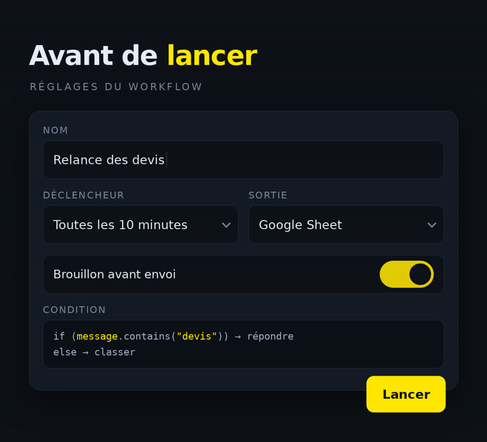
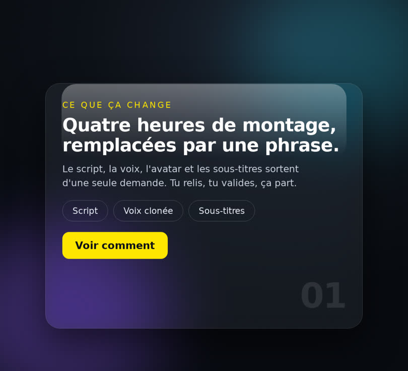

Bibliothèque maison pour le haut de tes vidéos en écran scindé · 1080×980 · animées · dessinées ici, rien d'un kit tiers
Dans une vidéo en écran scindé, le haut porte l'information et le bas porte ta tête. Ces six modèles remplissent le haut. Chacun s'anime tout seul : les éléments apparaissent l'un après l'autre, un balayage lumineux passe dessus, et un état change au milieu (une case se coche, un interrupteur bascule, un flux s'exécute).
Pour en fabriquer un clip : node /work/autoboost-neon-videos/_shared/ui-kit/render.mjs clip <id> [durée]. Le MP4 sort en 1080×980, prêt à passer dans le moteur d'écran scindé.
Pilules translucides sur halos colorés, reflet en haut, lueur dessous. La charte AutomationBoost.

verre-sombre · 9 s d'animation · node render.mjs clip verre-sombre
Version claire : blanc cassé, ombres douces, un seul accent. Pour un sujet calme ou un client premium.

verre-clair · 9 s d'animation · node render.mjs clip verre-clair
Cartes sombres à liseré lumineux, empilement doux. Pour un sujet technique ou un tableau de bord.

neo-nuit · 9 s d'animation · node render.mjs clip neo-nuit
Un enchaînement de nœuds relié par des câbles, exécution qui progresse de gauche à droite. Pour parler d'automatisation.

flux-noeuds · 10 s d'animation · node render.mjs clip flux-noeuds
Champs, sélecteur, interrupteur, bloc de code : le panneau qu'on remplit avant de lancer. Minimal, lisible en 9:16.

champs-reglages · 9 s d'animation · node render.mjs clip champs-reglages
Une seule carte en verre posée sur un fond profond. Quand il n'y a qu'une idée à montrer.

carte-flottante · 9 s d'animation · node render.mjs clip carte-flottante
Le texte de chaque modèle est écrit en dur pour l'instant. Dis-moi lesquels tu gardes et je les rends paramétrables : tu donnes le titre, les libellés et les noms de nœuds, le reste suit.
Créé le 07/09/2026 · six templates · police DejaVu (la seule installée ici) · palette AutomationBoost